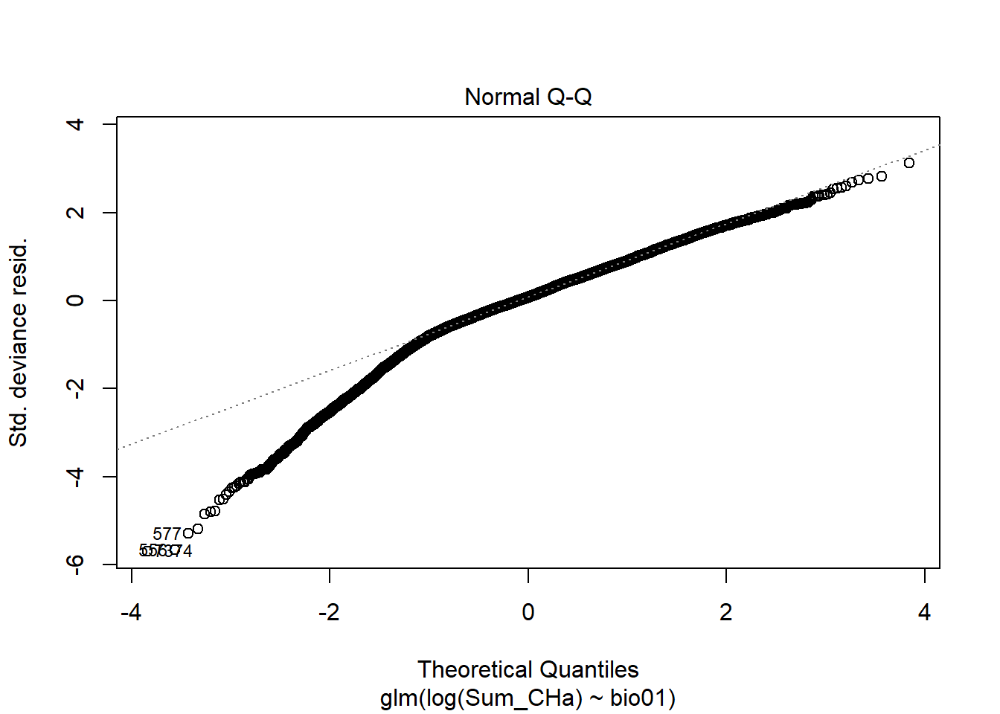
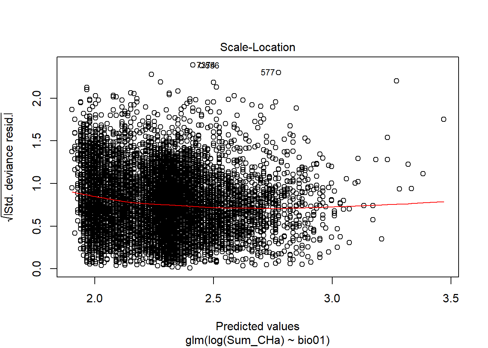
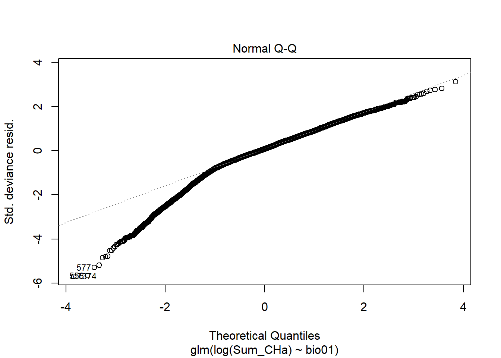
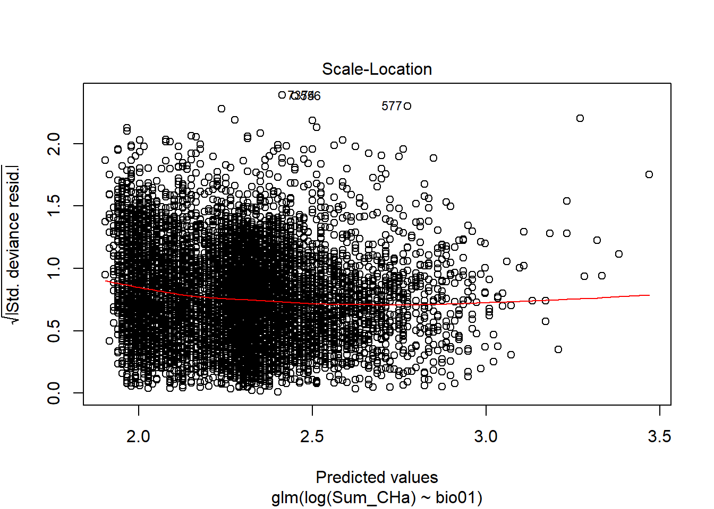
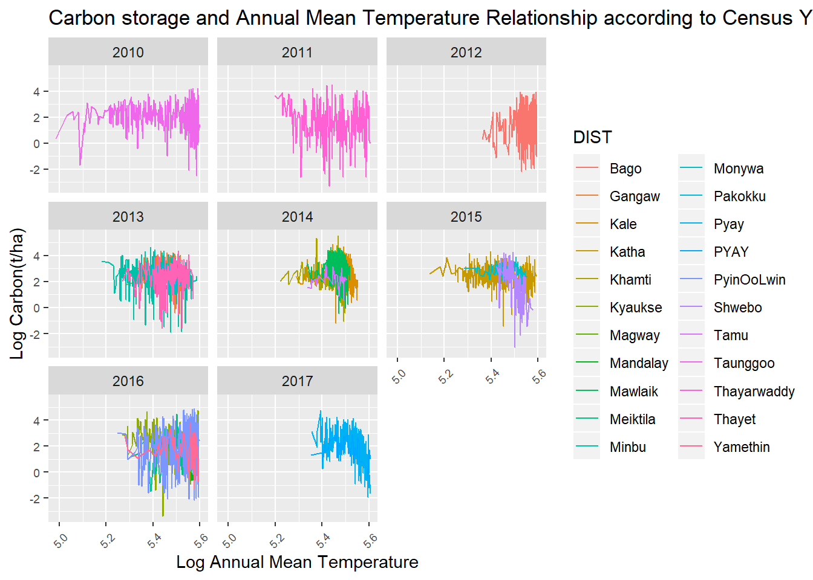
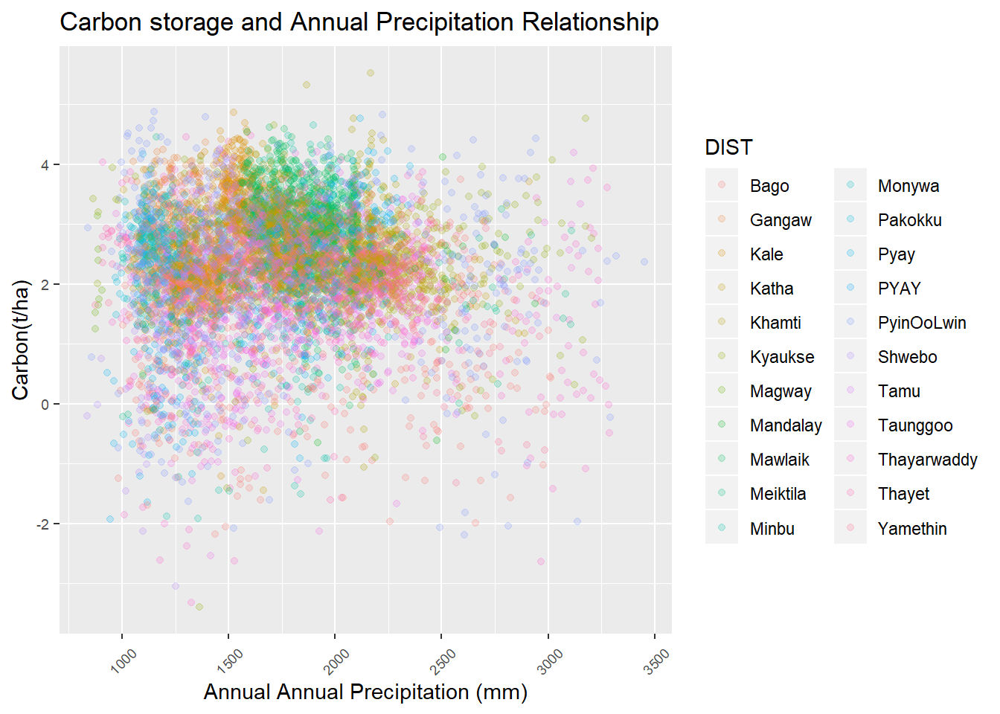
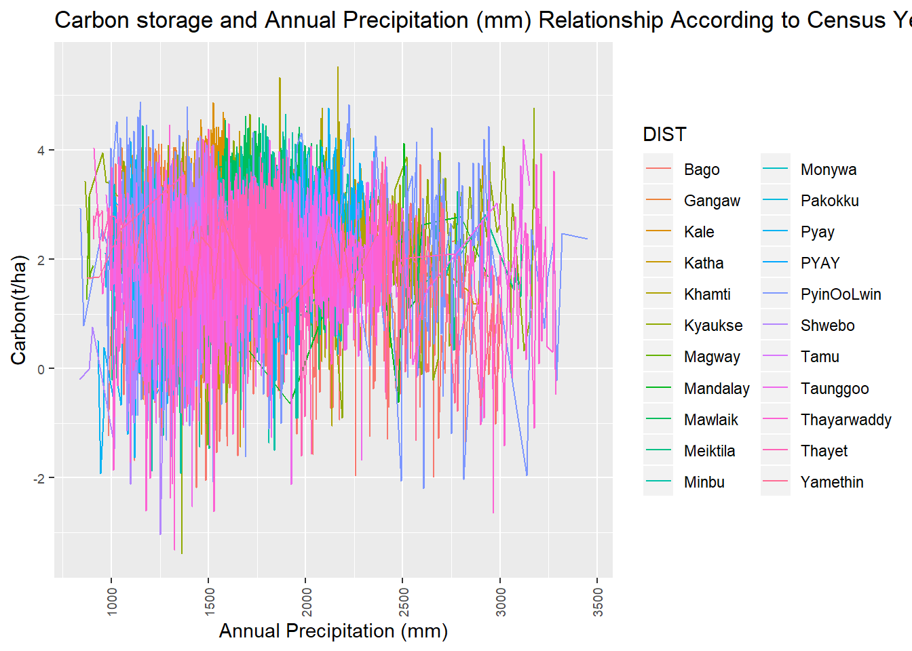
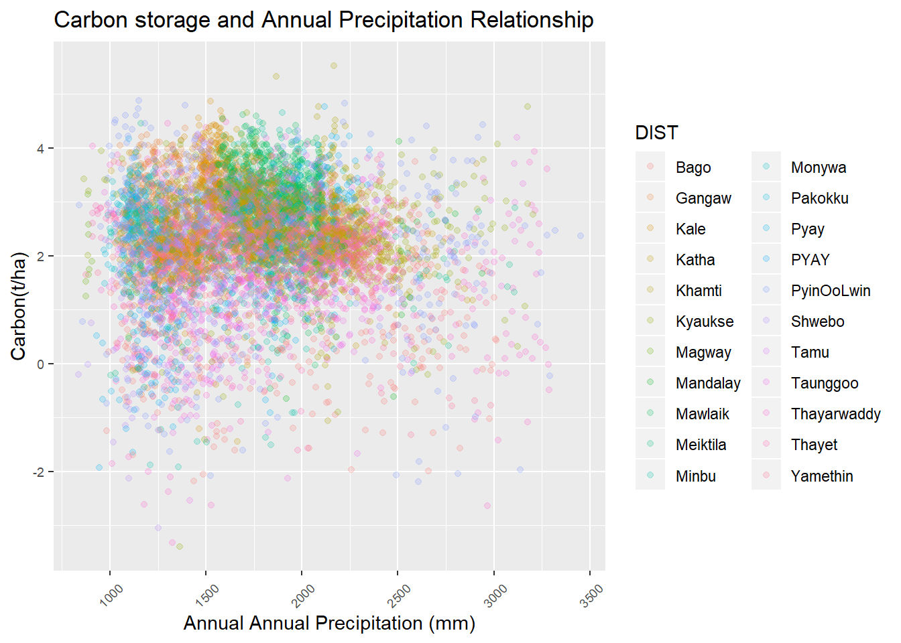
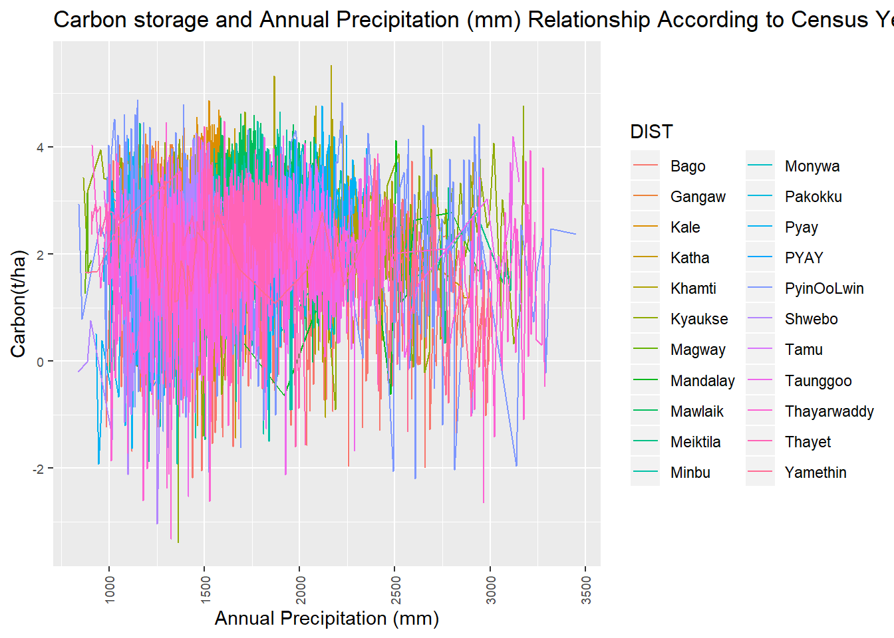

Carbon stocks assessment with National Forest Inventories Data
Loading the required Packages
library(tidyverse)
library(dplyr)
library(ggplot2)
library(stringr)
library(maps)
library(mapdata)
library(maptools)
library(sp)
library(raster)
library(BIOMASS)
library(ape)
library(magrittr)
library(tinytex)
library(raster)
library(rgdal)load the dataframe
Trees <- read.csv("Data_Output/MainFrame.csv")
Trees$District <- str_replace(Trees$District,"PYAY","Pyay")
str(Trees)## 'data.frame': 305526 obs. of 21 variables:
## $ Species_Code : int 1 1 1 1 1 1 1 1 1 1 ...
## $ Species_Record: int 26 27 28 80 81 82 143 157 172 178 ...
## $ District : chr "Pyay" "Pyay" "Pyay" "Pyay" ...
## $ Township : Factor w/ 65 levels "Aunglan","Bago",..: 38 38 38 38 38 38 38 38 38 38 ...
## $ PEF_Status : Factor w/ 314 levels "Ahlaw","Aik_Ext_1",..: 176 176 176 176 176 176 176 176 176 176 ...
## $ D_ID : int 4 4 4 7 7 7 16 16 16 17 ...
## $ EAST : int 791564 791564 791564 789521 789521 789521 797766 797766 797766 799825 ...
## $ NORTH : num 2121421 2121421 2121421 2119348 2119348 ...
## $ ALT : Factor w/ 1427 levels "0","10","100",..: 561 561 561 680 680 680 839 839 839 879 ...
## $ LC : int 3 3 3 1 1 1 1 1 1 1 ...
## $ FT : int 63 63 63 63 63 63 63 63 63 63 ...
## $ DEN : int 0 0 0 2 2 2 1 1 1 2 ...
## $ TNO : int 1 2 3 31 32 33 24 38 53 4 ...
## $ DBH_mm : int 230 220 210 160 190 120 350 700 610 260 ...
## $ Year : int 2017 2017 2017 2017 2017 2017 2017 2017 2017 2017 ...
## $ Plot_names : Factor w/ 8166 levels "N181974E1971996",..: 1799 1799 1799 1787 1787 1787 1773 1773 1773 1774 ...
## $ Local_names : Factor w/ 464 levels "Akyaw","Akyawsi-bin",..: 121 121 121 121 121 121 121 121 121 121 ...
## $ Genus : Factor w/ 264 levels "Acacia","Acrocarpus",..: 243 243 243 243 243 243 243 243 243 243 ...
## $ Species : Factor w/ 359 levels "acerifolium",..: 118 118 118 118 118 118 118 118 118 118 ...
## $ Binomial : Factor w/ 468 levels "Acacia arabica",..: 426 426 426 426 426 426 426 426 426 426 ...
## $ DBH_cm : num 23 22 21 16 19 12 35 70 61 26 ...Omitting the EAST and NORT with NA values and taxonomy of trees are corrected by using the to correct typos in scientific names using the Taxonomic Name Resolution Service
Trees <- Trees[!is.na(Trees$NORTH),]
sum(is.na(Trees$EAST))## [1] 0dim(Trees)## [1] 305526 21TreesNA <- Trees[Trees$Species=="NA",]
Trees <- Trees[!is.na(Trees$Species),]
str(Trees)## 'data.frame': 305526 obs. of 21 variables:
## $ Species_Code : int 1 1 1 1 1 1 1 1 1 1 ...
## $ Species_Record: int 26 27 28 80 81 82 143 157 172 178 ...
## $ District : chr "Pyay" "Pyay" "Pyay" "Pyay" ...
## $ Township : Factor w/ 65 levels "Aunglan","Bago",..: 38 38 38 38 38 38 38 38 38 38 ...
## $ PEF_Status : Factor w/ 314 levels "Ahlaw","Aik_Ext_1",..: 176 176 176 176 176 176 176 176 176 176 ...
## $ D_ID : int 4 4 4 7 7 7 16 16 16 17 ...
## $ EAST : int 791564 791564 791564 789521 789521 789521 797766 797766 797766 799825 ...
## $ NORTH : num 2121421 2121421 2121421 2119348 2119348 ...
## $ ALT : Factor w/ 1427 levels "0","10","100",..: 561 561 561 680 680 680 839 839 839 879 ...
## $ LC : int 3 3 3 1 1 1 1 1 1 1 ...
## $ FT : int 63 63 63 63 63 63 63 63 63 63 ...
## $ DEN : int 0 0 0 2 2 2 1 1 1 2 ...
## $ TNO : int 1 2 3 31 32 33 24 38 53 4 ...
## $ DBH_mm : int 230 220 210 160 190 120 350 700 610 260 ...
## $ Year : int 2017 2017 2017 2017 2017 2017 2017 2017 2017 2017 ...
## $ Plot_names : Factor w/ 8166 levels "N181974E1971996",..: 1799 1799 1799 1787 1787 1787 1773 1773 1773 1774 ...
## $ Local_names : Factor w/ 464 levels "Akyaw","Akyawsi-bin",..: 121 121 121 121 121 121 121 121 121 121 ...
## $ Genus : Factor w/ 264 levels "Acacia","Acrocarpus",..: 243 243 243 243 243 243 243 243 243 243 ...
## $ Species : Factor w/ 359 levels "acerifolium",..: 118 118 118 118 118 118 118 118 118 118 ...
## $ Binomial : Factor w/ 468 levels "Acacia arabica",..: 426 426 426 426 426 426 426 426 426 426 ...
## $ DBH_cm : num 23 22 21 16 19 12 35 70 61 26 ...summary(Trees)## Species_Code Species_Record District Township
## Min. : 1.0 Min. : 1 Length:305526 Homalin : 31066
## 1st Qu.:121.0 1st Qu.: 7671 Class :character Mawlaik : 23291
## Median :188.0 Median : 19896 Mode :character Kalewa : 23284
## Mean :217.1 Mean : 36201 Paungbyin: 23003
## 3rd Qu.:357.0 3rd Qu.: 53914 Mingin : 20301
## Max. :503.0 Max. :136512 Banmauk : 10817
## (Other) :173764
## PEF_Status D_ID EAST
## Homalin_UCF : 17589 Min. : 1.0 Min. : 185000
## Paungbyin_UCF: 12061 1st Qu.: 214.0 1st Qu.: 627099
## Kalewa_UCF : 10471 Median : 492.0 Median : 670000
## Patolon : 8990 Mean : 773.9 Mean : 702611
## Yeyaman : 7881 3rd Qu.:1153.0 3rd Qu.: 714000
## Mingin_UCF : 7403 Max. :2989.0 Max. :2199000
## (Other) :241131
## NORTH ALT LC FT
## Min. : 181974 430 : 2013 Min. : 0.000 Min. : 0.00
## 1st Qu.:2313500 420 : 1702 1st Qu.: 1.000 1st Qu.:62.00
## Median :2541500 402 : 1452 Median : 1.000 Median :63.00
## Mean :2355058 350 : 1395 Mean : 1.423 Mean :64.34
## 3rd Qu.:2653000 320 : 1275 3rd Qu.: 1.000 3rd Qu.:63.00
## Max. :2824000 220 : 1217 Max. :14.000 Max. :93.00
## (Other):296472
## DEN TNO DBH_mm Year
## Min. : 0.000 Min. : 0.00 Min. : 0.0 Min. :2010
## 1st Qu.: 2.000 1st Qu.: 6.00 1st Qu.: 150.0 1st Qu.:2013
## Median : 2.000 Median : 13.00 Median : 268.0 Median :2014
## Mean : 1.971 Mean : 18.21 Mean : 282.4 Mean :2014
## 3rd Qu.: 2.000 3rd Qu.: 24.00 3rd Qu.: 375.0 3rd Qu.:2015
## Max. :27.000 Max. :281.00 Max. :3225.0 Max. :2017
##
## Plot_names Local_names Genus
## N2475500E227000: 306 In : 24619 Dipterocarpus: 48655
## N2490500E210000: 259 Kanyin : 23980 Terminalia : 24113
## N2436500E222000: 252 Pyinkado: 18361 Xylia : 18361
## N2491500E211000: 251 Kyun : 15982 Tectona : 16654
## N2467500E225000: 245 Taukkyan: 14990 Quercus : 13975
## N2499500E213000: 231 Sagat : 11398 Pentacme : 10395
## (Other) :303982 (Other) :196196 (Other) :173373
## Species Binomial
## spp. : 40456 Dipterocarpus tuberculatus: 24619
## tuberculatus : 24619 Dipterocarpus spp. : 23980
## grandis : 20984 Xylia dolabriformis : 18361
## dolabriformis: 18361 Tectona grandis : 15982
## tomentosa : 15913 Terminalia tomentosa : 14976
## spicata : 11615 Quercus spicata : 11398
## (Other) :173578 (Other) :196210
## DBH_cm
## Min. : 0.00
## 1st Qu.: 15.00
## Median : 26.80
## Mean : 28.24
## 3rd Qu.: 37.50
## Max. :322.50
## unique(Trees$District)## [1] "Pyay" "PyinOoLwin" "Meiktila" "Mandalay" "Kyaukse"
## [6] "Katha" "Shwebo" "Monywa" "Tamu" "Kale"
## [11] "Mawlaik" "Khamti" "Gangaw" "Pakokku" "Minbu"
## [16] "Magway" "Thayet" "Bago" "Thayarwaddy" "Taunggoo"
## [21] "Yamethin"Trees <- droplevels(Trees)Obtaining wood density
Obtaining Wood density - getWoodDensity assigns to each taxon a species- or genus-level average if at least one wood density value in the same genus as the focal taxon is available in the reference database. For unidentified trees or if the genus is missing in the reference database, the stand-level mean wood density is assigned to the tree (based on trees for which a value was attributed).
Taxo <- correctTaxo(genus= Trees$Genus, species = Trees$Species)
Trees$genusCorr <- Taxo$genusCorrected
Trees$speciesCorr <- Taxo$speciesCorrected
APG <- getTaxonomy(Trees$genusCorr, findOrder =T)
Trees$familyAPG <- APG$family
Trees$orderAPG <- APG$order
dataWD <- getWoodDensity(genus=Trees$genusCorr,
species=Trees$speciesCorr,
stand=NULL, family = Trees$familyAPG, region = "World")
Trees <- Trees %>% mutate(DBH_cm=DBH_mm/10) %>% mutate(WD=dataWD$meanWD)Building a Diameter Height Model based on the first year data
library(lme4)
Forests <- read.csv("Data/All_data_Final.csv")
names(Forests)## [1] "Forest_type" "Plot_id" "Species_names" "Genus"
## [5] "Species" "Family" "Dbh_cm" "H_m"
## [9] "WD" "AGB" "C_Tree" "BA"
## [13] "Lat" "Long" "Northing" "Easting"
## [17] "Tenure"Forests <- filter(Forests,!is.na(Species_names) & !is.na(Dbh_cm))
summary(Forests)## Forest_type Plot_id
## Dipterocarpus_Forest :1275 Min. : 1.00
## Dry_Forest : 871 1st Qu.: 23.00
## Dry_Hill_Forest : 649 Median : 53.00
## Dry_Mixed_Deciduous_Forest :1062 Mean : 55.69
## Moist_Mixed_Deciduous_Forest: 587 3rd Qu.: 89.00
## Max. :119.00
##
## Species_names Genus
## Tectona_hamiltoniana : 613 Tectona : 865
## Shorea_obtusa : 386 Shorea : 536
## Tectona_grandis : 252 Vitex : 275
## Vitex_canescens : 211 Terminalia : 266
## Dipterocarpus_tuberculatus: 189 Dalbergia : 202
## Shorea_siamensis : 150 Dipterocarpus: 189
## (Other) :2643 (Other) :2111
## Species Family Dbh_cm
## hamiltoniana: 613 Verbenaceae :1010 Min. : 3.00
## obtusa : 386 Dipterocarpaceae: 726 1st Qu.: 10.00
## grandis : 256 Combretaceae : 294 Median : 14.50
## canescens : 211 Fabaceae : 231 Mean : 19.02
## oliveri : 195 Lamiaceae : 191 3rd Qu.: 24.00
## tuberculatus: 189 (Other) :1977 Max. :137.00
## (Other) :2594 NA's : 15
## H_m WD AGB C_Tree
## Min. : 0.3048 Min. :0.2200 Min. : 0.001082 Min. :0.000508
## 1st Qu.: 9.1440 1st Qu.:0.6014 1st Qu.: 0.042343 1st Qu.:0.019901
## Median :15.2400 Median :0.7200 Median : 0.136046 Median :0.063941
## Mean :19.5457 Mean :0.7164 Mean : 0.523717 Mean :0.246147
## 3rd Qu.:25.3049 3rd Qu.:0.8500 3rd Qu.: 0.477241 3rd Qu.:0.224303
## Max. :83.0000 Max. :1.0950 Max. :20.000150 Max. :9.400070
##
## BA Lat Long Northing
## Min. :0.000707 Min. :18.88 Min. :95.22 Min. :2089871
## 1st Qu.:0.007854 1st Qu.:20.85 1st Qu.:95.24 1st Qu.:2306949
## Median :0.016513 Median :20.89 Median :95.26 Median :2311426
## Mean :0.042563 Mean :20.66 Mean :95.34 Mean :2285967
## 3rd Qu.:0.045239 3rd Qu.:20.91 3rd Qu.:95.27 3rd Qu.:2313971
## Max. :1.474114 Max. :20.93 Max. :96.08 Max. :2316236
##
## Easting Tenure
## Min. :193210 Protected_Area :3857
## 1st Qu.:732675 Reserve : 487
## Median :734513 Unclassifed_Forest: 100
## Mean :729817
## 3rd Qu.:736259
## Max. :809669
## unique(Forests$Forest_type)## [1] Dipterocarpus_Forest Dry_Forest
## [3] Dry_Hill_Forest Dry_Mixed_Deciduous_Forest
## [5] Moist_Mixed_Deciduous_Forest
## 5 Levels: Dipterocarpus_Forest Dry_Forest ... Moist_Mixed_Deciduous_ForestSelected_Forests <- Forests %>% filter(Forest_type=="Moist_Mixed_Deciduous_Forest"| Forest_type=="Dry_Mixed_Deciduous_Forest")
LogDH_Selected_Forests <- Selected_Forests %>% mutate(LogDbh_cm=log(Dbh_cm)) %>% mutate(LogH_m=log(H_m))
ggplot(data = Selected_Forests, aes(Dbh_cm, H_m, color=Forest_type) )+ geom_point()
ModelForHeight <- lmer(log(H_m)~log(Dbh_cm)+(1|Plot_id), REML = FALSE, data = Selected_Forests)
ModelForHeight## Linear mixed model fit by maximum likelihood ['lmerMod']
## Formula: log(H_m) ~ log(Dbh_cm) + (1 | Plot_id)
## Data: Selected_Forests
## AIC BIC logLik deviance df.resid
## 741.8587 763.4904 -366.9293 733.8587 1645
## Random effects:
## Groups Name Std.Dev.
## Plot_id (Intercept) 0.1359
## Residual 0.2939
## Number of obs: 1649, groups: Plot_id, 42
## Fixed Effects:
## (Intercept) log(Dbh_cm)
## 0.5622 0.6386ranef(ModelForHeight)$Plot_id[,1] %>% hist()
ModelForHeight_Log <- lmer(LogH_m~LogDbh_cm +(1|Plot_id), REML = FALSE, data = LogDH_Selected_Forests)
ModelForHeight_Log## Linear mixed model fit by maximum likelihood ['lmerMod']
## Formula: LogH_m ~ LogDbh_cm + (1 | Plot_id)
## Data: LogDH_Selected_Forests
## AIC BIC logLik deviance df.resid
## 741.8587 763.4904 -366.9293 733.8587 1645
## Random effects:
## Groups Name Std.Dev.
## Plot_id (Intercept) 0.1359
## Residual 0.2939
## Number of obs: 1649, groups: Plot_id, 42
## Fixed Effects:
## (Intercept) LogDbh_cm
## 0.5622 0.6386The best possible random effect model
summary(ModelForHeight_Log)## Linear mixed model fit by maximum likelihood ['lmerMod']
## Formula: LogH_m ~ LogDbh_cm + (1 | Plot_id)
## Data: LogDH_Selected_Forests
##
## AIC BIC logLik deviance df.resid
## 741.9 763.5 -366.9 733.9 1645
##
## Scaled residuals:
## Min 1Q Median 3Q Max
## -11.1670 -0.5243 0.0742 0.5774 2.9321
##
## Random effects:
## Groups Name Variance Std.Dev.
## Plot_id (Intercept) 0.01846 0.1359
## Residual 0.08637 0.2939
## Number of obs: 1649, groups: Plot_id, 42
##
## Fixed effects:
## Estimate Std. Error t value
## (Intercept) 0.56221 0.04809 11.69
## LogDbh_cm 0.63861 0.01424 44.86
##
## Correlation of Fixed Effects:
## (Intr)
## LogDbh_cm -0.886ranef(ModelForHeight_Log)$Plot_id[,1] %>% hist() Getting tree Height based on the best model and substracted the lowest random effect of the plot no. 115 from every plots of the dataframe that I need to predict Height. Plot no. 115 had the lowest random effect number.
Getting tree Height based on the best model and substracted the lowest random effect of the plot no. 115 from every plots of the dataframe that I need to predict Height. Plot no. 115 had the lowest random effect number.
Trees$H_pred <- predict(ModelForHeight_Log, data.frame(LogDbh_cm= log(Trees$DBH_cm), Plot_id=115))
Trees <- Trees %>%
mutate(AdjustH_Pred=exp(H_pred-0.0007450583))Testing the DBH and Height relationship for trees—–
names(Trees)## [1] "Species_Code" "Species_Record" "District" "Township"
## [5] "PEF_Status" "D_ID" "EAST" "NORTH"
## [9] "ALT" "LC" "FT" "DEN"
## [13] "TNO" "DBH_mm" "Year" "Plot_names"
## [17] "Local_names" "Genus" "Species" "Binomial"
## [21] "DBH_cm" "genusCorr" "speciesCorr" "familyAPG"
## [25] "orderAPG" "WD" "H_pred" "AdjustH_Pred"ggplot(data = Trees, aes(DBH_cm, AdjustH_Pred, color=District) )+ geom_point()
Calculating the biomass of each tree
Where, D = Tree diameter (in cm), either a vector or a single value Wood density (in g/cm3), either a vector or a single value. Tree height (H in m), either a vector or a single value.
CoordsH <- cbind(Trees$EAST, Trees$NORTH)
Trees <- Trees %>% mutate(AGB=computeAGB(D = DBH_cm, WD = WD, H = AdjustH_Pred, coord = CoordsH, Dlim = NULL))
Trees <- Trees %>% mutate(Carbon_Mg= AGB*0.471)
write.csv(Trees, file = "Data_Output/Trees.csv", row.names = F)Sampling Method
image: 
1 ha sample plot with a 50m * 50 m nested plot. Therefore, the big dataframe was splitted into two according to the DBH limit measured in the 50m * 50m subplot. (100m x 100m and 50m x 50m)
Trees <- read.csv("Data_Output/Trees.csv")
Trees <- droplevels(Trees)
Trees_1ha <- Trees %>% filter(DBH_mm >= 200)
Trees_50m <- Trees %>% filter(DBH_mm < 200)** Calculating the carbon per ha for two different size plots**
Plot_1ha <- Trees_1ha %>%
group_by(Plot_names,District,Year, EAST, NORTH) %>%
dplyr::summarise(C_ha = sum(Carbon_Mg))
Plot_50M <- Trees_50m %>%
group_by(Plot_names,District,Year, EAST, NORTH) %>%
dplyr::summarise(C_Tree_total = sum(Carbon_Mg)) %>%
mutate(C_ha=C_Tree_total/0.25) %>% dplyr::select(-C_Tree_total)Combining two dataframes of different plot size according to Plot names.In this process, NA values- generated were replaced with zero in order to add carbon per ha of different plot size together. Carbon per hectare columns of the two dataframes were added together to obtain total carbon of each plot in hectare scale.
All_Plots <- bind_rows(Plot_1ha,Plot_50M) %>% group_by(Plot_names,District,Year, EAST, NORTH) %>% summarise(Sum_CHa=sum(C_ha))
droplevels(All_Plots)## # A tibble: 8,168 x 6
## # Groups: Plot_names, District, Year, EAST [8,168]
## Plot_names District Year EAST NORTH Sum_CHa
## <fct> <fct> <int> <int> <dbl> <dbl>
## 1 N181974E1971996 Thayarwaddy 2011 1971996 181974 3.89
## 2 N182002E1970008 Thayarwaddy 2011 1970008 182002 4.68
## 3 N182004E1962006 Thayarwaddy 2011 1962006 182004 3.93
## 4 N182009E1964004 Thayarwaddy 2011 1964004 182009 0.639
## 5 N182232E1974110 Thayarwaddy 2011 1974110 182232 1.80
## 6 N182246E1977268 Thayarwaddy 2011 1977268 182246 14.8
## 7 N183934E1999962 Thayarwaddy 2011 1999962 183934 7.75
## 8 N183938E2028020 Thayarwaddy 2011 2028020 183938 8.02
## 9 N183948E2022059 Thayarwaddy 2011 2022059 183948 16.2
## 10 N183955E1988182 Thayarwaddy 2011 1988182 183955 3.92
## # ... with 8,158 more rowshist(All_Plots$Sum_CHa, breaks=100)
Producing a clean dataframe
All_Plots$Year <- as.factor(All_Plots$Year)
summary(All_Plots)## Plot_names District Year EAST
## N2666000E652000: 2 Mawlaik : 964 2014 :2824 Min. : 185000
## N2724000E662000: 2 Taunggoo: 957 2013 :1098 1st Qu.: 629000
## N181974E1971996: 1 Khamti : 948 2015 :1024 Median : 680002
## N182002E1970008: 1 Kale : 867 2010 : 957 Mean : 840048
## N182004E1962006: 1 Katha : 663 2016 : 821 3rd Qu.: 766000
## N182009E1964004: 1 Bago : 567 2012 : 567 Max. :2199000
## (Other) :8160 (Other) :3202 (Other): 877
## NORTH Sum_CHa
## Min. : 181974 Min. : 0.000
## 1st Qu.:2051971 1st Qu.: 5.745
## Median :2470006 Median : 10.201
## Mean :2124600 Mean : 14.408
## 3rd Qu.:2646000 3rd Qu.: 18.650
## Max. :2824000 Max. :228.407
## ggplot(data = All_Plots, aes(x = District, y= Sum_CHa, color= Year))+
geom_boxplot()+
labs(title = "Carbon storage per ha in 21 disctricts from 2010 to 2017",
x= "District name",
y= "Carbon(t/ha)")+
theme(axis.text.x = element_text(size=7, angle = 90, vjust = 0.5),
axis.text.y = element_text(size = 7))
remove duplicated rows
All_Plots <- distinct(All_Plots)
All_Plots <- droplevels(All_Plots)Produce a cleaned data frame for per ha carbon for each plot
write.csv(All_Plots,file = "Data_Output/Carbon_Per_Plots.csv",row.names = FALSE)** comparing Carbon with new model and old model for height prediction**
Comparison <- read.csv("Data_Output/Plots_Carbon.csv")
attach(Comparison)
ggplot(data=Comparison, aes(x=New_Carbon, y = Old_Carbon, color=District))+ geom_point()
detach(Comparison)Carbon according to WWF’s ecoregions. Use the original shape file of plots Locations to extract values
Ecoregions <- read.csv("Data_Output/WWFEcoregions-Plots(23-10-2019).csv", stringsAsFactors = F)
Carbon <- read.csv("Data_Output/Carbon_Per_Plots.csv", stringsAsFactors = F)
Eco_Carbon <- Carbon %>% left_join(dplyr::select(Ecoregions, -Year, -District),by.x = "Plot_names") %>% dplyr::select(-EAST,-NORTH) %>% drop_na(ECO_NAME)## Joining, by = "Plot_names"attach(Eco_Carbon)
lm.CarbonEcoregions <- lm(Sum_CHa~ECO_NAME, data = Eco_Carbon)
anova(lm.CarbonEcoregions)## Analysis of Variance Table
##
## Response: Sum_CHa
## Df Sum Sq Mean Sq F value Pr(>F)
## ECO_NAME 6 56195 9365.8 69.913 < 2.2e-16 ***
## Residuals 8083 1082823 134.0
## ---
## Signif. codes: 0 '***' 0.001 '**' 0.01 '*' 0.05 '.' 0.1 ' ' 1plot(lm.CarbonEcoregions)
 

boxplot(Sum_CHa~ECO_NAME, data = Eco_Carbon)aov.CarbonEcoregions <- aov(Sum_CHa~ECO_NAME, data = Eco_Carbon)
TukeyHSD(aov.CarbonEcoregions)## Tukey multiple comparisons of means
## 95% family-wise confidence level
##
## Fit: aov(formula = Sum_CHa ~ ECO_NAME, data = Eco_Carbon)
##
## $ECO_NAME
## diff
## Irrawaddy Dry Forests-Chin Hills-Arakan Yoma Montane Forests 1.34680216
## Irrawaddy Moist Deciduous Forests-Chin Hills-Arakan Yoma Montane Forests 4.74612932
## Kayah-Karen Montane Rain Forests-Chin Hills-Arakan Yoma Montane Forests -0.06513581
## Mizoram-Manipur-Kachin Rain Forests-Chin Hills-Arakan Yoma Montane Forests 8.26014636
## Myanmar Coastal Rain Forests-Chin Hills-Arakan Yoma Montane Forests 2.70390248
## Northern Indochina Subtropical Forests-Chin Hills-Arakan Yoma Montane Forests 0.59682947
## Irrawaddy Moist Deciduous Forests-Irrawaddy Dry Forests 3.39932716
## Kayah-Karen Montane Rain Forests-Irrawaddy Dry Forests -1.41193797
## Mizoram-Manipur-Kachin Rain Forests-Irrawaddy Dry Forests 6.91334420
## Myanmar Coastal Rain Forests-Irrawaddy Dry Forests 1.35710032
## Northern Indochina Subtropical Forests-Irrawaddy Dry Forests -0.74997269
## Kayah-Karen Montane Rain Forests-Irrawaddy Moist Deciduous Forests -4.81126513
## Mizoram-Manipur-Kachin Rain Forests-Irrawaddy Moist Deciduous Forests 3.51401704
## Myanmar Coastal Rain Forests-Irrawaddy Moist Deciduous Forests -2.04222684
## Northern Indochina Subtropical Forests-Irrawaddy Moist Deciduous Forests -4.14929985
## Mizoram-Manipur-Kachin Rain Forests-Kayah-Karen Montane Rain Forests 8.32528217
## Myanmar Coastal Rain Forests-Kayah-Karen Montane Rain Forests 2.76903829
## Northern Indochina Subtropical Forests-Kayah-Karen Montane Rain Forests 0.66196528
## Myanmar Coastal Rain Forests-Mizoram-Manipur-Kachin Rain Forests -5.55624388
## Northern Indochina Subtropical Forests-Mizoram-Manipur-Kachin Rain Forests -7.66331689
## Northern Indochina Subtropical Forests-Myanmar Coastal Rain Forests -2.10707301
## lwr
## Irrawaddy Dry Forests-Chin Hills-Arakan Yoma Montane Forests -1.1588402
## Irrawaddy Moist Deciduous Forests-Chin Hills-Arakan Yoma Montane Forests 3.3454666
## Kayah-Karen Montane Rain Forests-Chin Hills-Arakan Yoma Montane Forests -3.6359727
## Mizoram-Manipur-Kachin Rain Forests-Chin Hills-Arakan Yoma Montane Forests 6.7566563
## Myanmar Coastal Rain Forests-Chin Hills-Arakan Yoma Montane Forests 0.9607350
## Northern Indochina Subtropical Forests-Chin Hills-Arakan Yoma Montane Forests -1.4402614
## Irrawaddy Moist Deciduous Forests-Irrawaddy Dry Forests 1.1789149
## Kayah-Karen Montane Rain Forests-Irrawaddy Dry Forests -5.3766890
## Mizoram-Manipur-Kachin Rain Forests-Irrawaddy Dry Forests 4.6266748
## Myanmar Coastal Rain Forests-Irrawaddy Dry Forests -1.0938194
## Northern Indochina Subtropical Forests-Irrawaddy Dry Forests -3.4179521
## Kayah-Karen Montane Rain Forests-Irrawaddy Moist Deciduous Forests -8.1880777
## Mizoram-Manipur-Kachin Rain Forests-Irrawaddy Moist Deciduous Forests 2.5587845
## Myanmar Coastal Rain Forests-Irrawaddy Moist Deciduous Forests -3.3424652
## Northern Indochina Subtropical Forests-Irrawaddy Moist Deciduous Forests -5.8231357
## Mizoram-Manipur-Kachin Rain Forests-Kayah-Karen Montane Rain Forests 4.9045382
## Myanmar Coastal Rain Forests-Kayah-Karen Montane Rain Forests -0.7636151
## Northern Indochina Subtropical Forests-Kayah-Karen Montane Rain Forests -3.0245977
## Myanmar Coastal Rain Forests-Mizoram-Manipur-Kachin Rain Forests -6.9666502
## Northern Indochina Subtropical Forests-Mizoram-Manipur-Kachin Rain Forests -9.4240987
## Northern Indochina Subtropical Forests-Myanmar Coastal Rain Forests -4.0764646
## upr
## Irrawaddy Dry Forests-Chin Hills-Arakan Yoma Montane Forests 3.8524445
## Irrawaddy Moist Deciduous Forests-Chin Hills-Arakan Yoma Montane Forests 6.1467920
## Kayah-Karen Montane Rain Forests-Chin Hills-Arakan Yoma Montane Forests 3.5057011
## Mizoram-Manipur-Kachin Rain Forests-Chin Hills-Arakan Yoma Montane Forests 9.7636364
## Myanmar Coastal Rain Forests-Chin Hills-Arakan Yoma Montane Forests 4.4470699
## Northern Indochina Subtropical Forests-Chin Hills-Arakan Yoma Montane Forests 2.6339204
## Irrawaddy Moist Deciduous Forests-Irrawaddy Dry Forests 5.6197394
## Kayah-Karen Montane Rain Forests-Irrawaddy Dry Forests 2.5528131
## Mizoram-Manipur-Kachin Rain Forests-Irrawaddy Dry Forests 9.2000136
## Myanmar Coastal Rain Forests-Irrawaddy Dry Forests 3.8080200
## Northern Indochina Subtropical Forests-Irrawaddy Dry Forests 1.9180067
## Kayah-Karen Montane Rain Forests-Irrawaddy Moist Deciduous Forests -1.4344525
## Mizoram-Manipur-Kachin Rain Forests-Irrawaddy Moist Deciduous Forests 4.4692496
## Myanmar Coastal Rain Forests-Irrawaddy Moist Deciduous Forests -0.7419885
## Northern Indochina Subtropical Forests-Irrawaddy Moist Deciduous Forests -2.4754640
## Mizoram-Manipur-Kachin Rain Forests-Kayah-Karen Montane Rain Forests 11.7460262
## Myanmar Coastal Rain Forests-Kayah-Karen Montane Rain Forests 6.3016917
## Northern Indochina Subtropical Forests-Kayah-Karen Montane Rain Forests 4.3485283
## Myanmar Coastal Rain Forests-Mizoram-Manipur-Kachin Rain Forests -4.1458376
## Northern Indochina Subtropical Forests-Mizoram-Manipur-Kachin Rain Forests -5.9025351
## Northern Indochina Subtropical Forests-Myanmar Coastal Rain Forests -0.1376815
## p adj
## Irrawaddy Dry Forests-Chin Hills-Arakan Yoma Montane Forests 0.6919756
## Irrawaddy Moist Deciduous Forests-Chin Hills-Arakan Yoma Montane Forests 0.0000000
## Kayah-Karen Montane Rain Forests-Chin Hills-Arakan Yoma Montane Forests 1.0000000
## Mizoram-Manipur-Kachin Rain Forests-Chin Hills-Arakan Yoma Montane Forests 0.0000000
## Myanmar Coastal Rain Forests-Chin Hills-Arakan Yoma Montane Forests 0.0000988
## Northern Indochina Subtropical Forests-Chin Hills-Arakan Yoma Montane Forests 0.9777555
## Irrawaddy Moist Deciduous Forests-Irrawaddy Dry Forests 0.0001307
## Kayah-Karen Montane Rain Forests-Irrawaddy Dry Forests 0.9421416
## Mizoram-Manipur-Kachin Rain Forests-Irrawaddy Dry Forests 0.0000000
## Myanmar Coastal Rain Forests-Irrawaddy Dry Forests 0.6608716
## Northern Indochina Subtropical Forests-Irrawaddy Dry Forests 0.9820056
## Kayah-Karen Montane Rain Forests-Irrawaddy Moist Deciduous Forests 0.0005330
## Mizoram-Manipur-Kachin Rain Forests-Irrawaddy Moist Deciduous Forests 0.0000000
## Myanmar Coastal Rain Forests-Irrawaddy Moist Deciduous Forests 0.0000752
## Northern Indochina Subtropical Forests-Irrawaddy Moist Deciduous Forests 0.0000000
## Mizoram-Manipur-Kachin Rain Forests-Kayah-Karen Montane Rain Forests 0.0000000
## Myanmar Coastal Rain Forests-Kayah-Karen Montane Rain Forests 0.2383569
## Northern Indochina Subtropical Forests-Kayah-Karen Montane Rain Forests 0.9984253
## Myanmar Coastal Rain Forests-Mizoram-Manipur-Kachin Rain Forests 0.0000000
## Northern Indochina Subtropical Forests-Mizoram-Manipur-Kachin Rain Forests 0.0000000
## Northern Indochina Subtropical Forests-Myanmar Coastal Rain Forests 0.0268960ggplot(data=Eco_Carbon, aes(x=ECO_NAME, y = Sum_CHa, color=ECO_NAME))+ geom_boxplot()+
labs(title = "Carbon storage according to ecoregions",
x= "Ecoregion",
y= "MaxCarbon(t/ha)")+
theme(axis.text.x = element_text(size=7, angle = 90, vjust = 0.5),
axis.text.y = element_text(size = 7))
detach(Eco_Carbon)Carbon and environmental conditions relationship
BIO1 = Annual Mean Temperature
BIO2 = Mean Diurnal Range (Mean of monthly (max temp - min temp))
BIO3 = Isothermality (BIO2/BIO7) (* 100)
BIO4 = Temperature Seasonality (standard deviation *100)
BIO5 = Max Temperature of Warmest Month
BIO6 = Min Temperature of Coldest Month
BIO7 = Temperature Annual Range (BIO5-BIO6)
BIO8 = Mean Temperature of Wettest Quarter
BIO9 = Mean Temperature of Driest Quarter
BIO10 = Mean Temperature of Warmest Quarter
BIO11 = Mean Temperature of Coldest Quarter
BIO12 = Annual Precipitation
BIO13 = Precipitation of Wettest Month
BIO14 = Precipitation of Driest Month
BIO15 = Precipitation Seasonality (Coefficient of Variation)
BIO16 = Precipitation of Wettest Quarter
BIO17 = Precipitation of Driest Quarter
BIO18 = Precipitation of Warmest Quarter
BIO19 = Precipitation of Coldest Quarter
Modelling carbon storage differences among districts and environmental impact on it
A one-way ANOVA showed that carbon storage differed significantly between districts (F=55.27, df=20,7860, p < 0.001)
lm.CarbonDistrict <- lm(Sum_CHa~District, data = Eco_Carbon)
anova(lm.CarbonDistrict)## Analysis of Variance Table
##
## Response: Sum_CHa
## Df Sum Sq Mean Sq F value Pr(>F)
## District 20 143369 7168.4 58.095 < 2.2e-16 ***
## Residuals 8069 995649 123.4
## ---
## Signif. codes: 0 '***' 0.001 '**' 0.01 '*' 0.05 '.' 0.1 ' ' 1plot(lm.CarbonDistrict) 

Env <- read.csv("Data_Output/WCL_plots(23-10-2019).csv", stringsAsFactors = F)
Env_Carbon <- Carbon %>% left_join(Env,by.x="Plot_names") %>% drop_na(bio01)## Joining, by = "Plot_names"the test has very conclusively rejected the hypothesis that all means are equal. However, this was not due to all of the sample means being different, but rather just because one of the groups is very different from the others. In order to drill down and investigate this further we use a new test called Tukey’s range test.This will compare all of the groups in a pairwise fashion and reports on whether a significant difference exists.
boxplot(Sum_CHa~District, data=Env_Carbon)
aov.Carbon <- aov(Sum_CHa~District,data= Env_Carbon)
TukeyHSD(aov.Carbon)## Tukey multiple comparisons of means
## 95% family-wise confidence level
##
## Fit: aov(formula = Sum_CHa ~ District, data = Env_Carbon)
##
## $District
## diff lwr upr p adj
## Gangaw-Bago 10.75974747 7.9456948 13.57380017 0.0000000
## Kale-Bago 8.54880189 6.3915946 10.70600918 0.0000000
## Katha-Bago 5.23543809 2.9642335 7.50664264 0.0000000
## Khamti-Bago 3.39371077 1.2866398 5.50078178 0.0000019
## Kyaukse-Bago 9.53790992 5.9955803 13.08023950 0.0000000
## Magway-Bago 0.28836701 -13.8319891 14.40872316 1.0000000
## Mandalay-Bago 2.40807963 -6.8417947 11.65795392 0.9999975
## Mawlaik-Bago 13.76490298 11.6615456 15.86826040 0.0000000
## Meiktila-Bago 0.70068706 -3.7998606 5.20123470 1.0000000
## Minbu-Bago 5.09980284 2.6146569 7.58494874 0.0000000
## Monywa-Bago 9.04166611 5.7098788 12.37345344 0.0000000
## Pakokku-Bago 3.47389677 -3.6282745 10.57606801 0.9780847
## Pyay-Bago 3.96425758 1.4272011 6.50131408 0.0000052
## PyinOoLwin-Bago 4.09718163 1.5829580 6.61140524 0.0000013
## Shwebo-Bago 6.08970996 2.6211505 9.55826943 0.0000001
## Tamu-Bago 2.04745092 -3.7507357 7.84563757 0.9996787
## Taunggoo-Bago 1.73521078 -0.3677379 3.83815949 0.2792575
## Thayarwaddy-Bago 0.08849711 -2.4241429 2.60113711 1.0000000
## Thayet-Bago 6.22753725 3.3123507 9.14272378 0.0000000
## Yamethin-Bago -1.09185231 -5.8288804 3.64517582 0.9999997
## Kale-Gangaw -2.21094558 -4.8594699 0.43757873 0.2586374
## Katha-Gangaw -5.52430938 -8.2664815 -2.78213728 0.0000000
## Khamti-Gangaw -7.36603670 -9.9738875 -4.75818586 0.0000000
## Kyaukse-Gangaw -1.22183754 -5.0830856 2.63941051 0.9999396
## Magway-Gangaw -10.47138045 -24.6750981 3.73233721 0.5040636
## Mandalay-Gangaw -8.35166783 -17.7283043 1.02496867 0.1587421
## Mawlaik-Gangaw 3.00515551 0.4003042 5.61000678 0.0066558
## Meiktila-Gangaw -10.05906041 -14.8146957 -5.30342514 0.0000000
## Minbu-Gangaw -5.65994462 -8.5817742 -2.73811509 0.0000000
## Monywa-Gangaw -1.71808135 -5.3871336 1.95097091 0.9865476
## Pakokku-Gangaw -7.28585070 -14.5523474 -0.01935401 0.0484627
## Pyay-Gangaw -6.79548988 -9.7615973 -3.82938243 0.0000000
## PyinOoLwin-Gangaw -6.66256583 -9.6091669 -3.71596473 0.0000000
## Shwebo-Gangaw -4.67003750 -8.4637221 -0.87635295 0.0020724
## Tamu-Gangaw -8.71229655 -14.7106385 -2.71395459 0.0000447
## Taunggoo-Gangaw -9.02453669 -11.6290579 -6.42001543 0.0000000
## Thayarwaddy-Gangaw -10.67125036 -13.6165003 -7.72600037 0.0000000
## Thayet-Gangaw -4.53221022 -7.8275782 -1.23684222 0.0001841
## Yamethin-Gangaw -11.85159977 -16.8316172 -6.87158238 0.0000000
## Katha-Kale -3.31336380 -5.3759249 -1.25080265 0.0000021
## Khamti-Kale -5.15509112 -7.0353934 -3.27478884 0.0000000
## Kyaukse-Kale 0.98910804 -2.4232060 4.40142209 0.9999852
## Magway-Kale -8.26043488 -22.3487366 5.82786687 0.8774577
## Mandalay-Kale -6.14072225 -15.3415898 3.06014525 0.6986507
## Mawlaik-Kale 5.21610109 3.3399612 7.09224096 0.0000000
## Meiktila-Kale -7.84811483 -12.2470599 -3.44916979 0.0000000
## Minbu-Kale -3.44899905 -5.7450257 -1.15297237 0.0000172
## Monywa-Kale 0.49286422 -2.7003466 3.68607502 1.0000000
## Pakokku-Kale -5.07490512 -12.1131311 1.96332084 0.5498443
## Pyay-Kale -4.58454431 -6.9366591 -2.23242949 0.0000000
## PyinOoLwin-Kale -4.45162025 -6.7790886 -2.12415194 0.0000000
## Shwebo-Kale -2.45909193 -5.7947617 0.87657789 0.5041123
## Tamu-Kale -6.50135097 -12.2210325 -0.78166943 0.0084925
## Taunggoo-Kale -6.81359111 -8.6892728 -4.93790946 0.0000000
## Thayarwaddy-Kale -8.46030478 -10.7860623 -6.13454723 0.0000000
## Thayet-Kale -2.32126464 -5.0770043 0.43447499 0.2431809
## Yamethin-Kale -9.64065420 -14.2812602 -5.00004821 0.0000000
## Khamti-Katha -1.84172732 -3.8517929 0.16833821 0.1239741
## Kyaukse-Katha 4.30247184 0.8169713 7.78797238 0.0019649
## Magway-Katha -4.94707108 -19.0532780 9.15913582 0.9997097
## Mandalay-Katha -2.82735846 -12.0556188 6.40090192 0.9999638
## Mawlaik-Katha 8.52946489 6.5232925 10.53563727 0.0000000
## Meiktila-Katha -4.53475103 -8.9907071 -0.07879499 0.0405324
## Minbu-Katha -0.13563525 -2.5390839 2.26781338 1.0000000
## Monywa-Katha 3.80622802 0.5349252 7.07753082 0.0057679
## Pakokku-Katha -1.76154132 -8.8355396 5.31245695 0.9999989
## Pyay-Katha -1.27118051 -3.7282664 1.18590535 0.9605734
## PyinOoLwin-Katha -1.13825645 -3.5717592 1.29524628 0.9867181
## Shwebo-Katha 0.85427187 -2.5562295 4.26477330 0.9999987
## Tamu-Katha -3.18798717 -8.9516304 2.57565610 0.9254536
## Taunggoo-Katha -3.50022731 -5.5059712 -1.49448344 0.0000001
## Thayarwaddy-Katha -5.14694098 -7.5788075 -2.71507441 0.0000000
## Thayet-Katha 0.99209916 -1.8537623 3.83796067 0.9997344
## Yamethin-Katha -6.32729040 -11.0219736 -1.63260716 0.0002993
## Kyaukse-Khamti 6.14419915 2.7633572 9.52504109 0.0000000
## Magway-Khamti -3.10534376 -17.1860558 10.97536827 0.9999999
## Mandalay-Khamti -0.98563114 -10.1748731 8.20361082 1.0000000
## Mawlaik-Khamti 10.37119221 8.5529222 12.18946220 0.0000000
## Meiktila-Khamti -2.69302371 -7.0676005 1.68155311 0.8222468
## Minbu-Khamti 1.70609207 -0.5428951 3.95507928 0.4446829
## Monywa-Khamti 5.64795534 2.4883984 8.80751229 0.0000000
## Pakokku-Khamti 0.08018600 -6.9428354 7.10320740 1.0000000
## Pyay-Khamti 0.57054681 -1.7356728 2.87676645 0.9999990
## PyinOoLwin-Khamti 0.70347086 -1.5776064 2.98454817 0.9999598
## Shwebo-Khamti 2.69599919 -0.6074684 5.99946678 0.2993913
## Tamu-Khamti -1.34625985 -7.0472213 4.35470163 0.9999995
## Taunggoo-Khamti -1.65849999 -3.4762972 0.15929720 0.1288404
## Thayarwaddy-Khamti -3.30521366 -5.5845454 -1.02588193 0.0000468
## Thayet-Khamti 2.83382648 0.1171546 5.55049831 0.0296526
## Yamethin-Khamti -4.48556308 -9.1030764 0.13195019 0.0692813
## Magway-Kyaukse -9.24954291 -23.6152939 5.11620808 0.7583850
## Mandalay-Kyaukse -7.12983029 -16.7501483 2.49048771 0.4931227
## Mawlaik-Kyaukse 4.22699305 0.8484643 7.60552178 0.0015061
## Meiktila-Kyaukse -8.83722286 -14.0569233 -3.61752240 0.0000003
## Minbu-Kyaukse -4.43810708 -8.0666459 -0.80956825 0.0023446
## Monywa-Kyaukse -0.49624381 -4.7496131 3.75712552 1.0000000
## Pakokku-Kyaukse -6.06401315 -13.6423494 1.51432309 0.3368980
## Pyay-Kyaukse -5.57365234 -9.2379394 -1.90936529 0.0000119
## PyinOoLwin-Kyaukse -5.44072829 -9.0892436 -1.79221294 0.0000213
## Shwebo-Kyaukse -3.44819996 -7.8095356 0.91313569 0.3604816
## Tamu-Kyaukse -7.49045900 -13.8630026 -1.11791537 0.0048404
## Taunggoo-Kyaukse -7.80269915 -11.1809734 -4.42442485 0.0000000
## Thayarwaddy-Kyaukse -9.44941281 -13.0968371 -5.80198856 0.0000000
## Thayet-Kyaukse -3.31037268 -7.2459357 0.62519036 0.2455852
## Yamethin-Kyaukse -10.62976223 -16.0546843 -5.20484017 0.0000000
## Mandalay-Magway 2.11971262 -14.5951573 18.83458257 1.0000000
## Mawlaik-Magway 13.47653596 -0.6036208 27.55669276 0.0810525
## Meiktila-Magway 0.41232005 -14.2192086 15.04384874 1.0000000
## Minbu-Magway 4.81143583 -9.3307936 18.95366525 0.9998157
## Monywa-Magway 8.75329910 -5.5619903 23.06858847 0.8307730
## Pakokku-Magway 3.18552976 -12.4435310 18.81459048 1.0000000
## Pyay-Magway 3.67589057 -10.4755531 17.82733426 0.9999976
## PyinOoLwin-Magway 3.80881462 -10.3385534 17.95618269 0.9999957
## Shwebo-Magway 5.80134295 -8.5463958 20.14908171 0.9978373
## Tamu-Magway 1.75908391 -13.3222181 16.84038595 1.0000000
## Taunggoo-Magway 1.44684377 -12.6332520 15.52693951 1.0000000
## Thayarwaddy-Magway -0.19986990 -14.3469566 13.94721682 1.0000000
## Thayet-Magway 5.93917023 -8.2849296 20.16327004 0.9966986
## Yamethin-Magway -1.38021932 -16.0862092 13.32577056 1.0000000
## Mawlaik-Mandalay 11.35682334 2.1684322 20.54521450 0.0019158
## Meiktila-Mandalay -1.70739257 -11.7202517 8.30546659 1.0000000
## Minbu-Mandalay 2.69172321 -6.5915074 11.97495377 0.9999851
## Monywa-Mandalay 6.63358648 -2.9112145 16.17838749 0.6234438
## Pakokku-Mandalay 1.06581714 -10.3553586 12.48699290 1.0000000
## Pyay-Mandalay 1.55617795 -7.7410838 10.85343965 1.0000000
## PyinOoLwin-Mandalay 1.68910200 -7.6019550 10.98015898 1.0000000
## Shwebo-Mandalay 3.68163033 -5.9117697 13.27503037 0.9989392
## Tamu-Mandalay -0.36062871 -11.0199621 10.29870466 1.0000000
## Taunggoo-Mandalay -0.67286885 -9.8611665 8.51542875 1.0000000
## Thayarwaddy-Mandalay -2.31958252 -11.6102111 6.97104605 0.9999988
## Thayet-Mandalay 3.81945761 -5.5880252 13.22694038 0.9977157
## Yamethin-Mandalay -3.49993194 -13.6212883 6.62142444 0.9997646
## Meiktila-Mawlaik -13.06421592 -17.4370053 -8.69142658 0.0000000
## Minbu-Mawlaik -8.66510013 -10.9106085 -6.41959181 0.0000000
## Monywa-Mawlaik -4.72323687 -7.8803185 -1.56615525 0.0000194
## Pakokku-Mawlaik -10.29100621 -17.3129143 -3.26909807 0.0000349
## Pyay-Mawlaik -9.80064539 -12.1034726 -7.49781817 0.0000000
## PyinOoLwin-Mawlaik -9.66772134 -11.9453688 -7.39007390 0.0000000
## Shwebo-Mawlaik -7.67519302 -10.9762932 -4.37409285 0.0000000
## Tamu-Mawlaik -11.71745206 -17.4170420 -6.01786207 0.0000000
## Taunggoo-Mawlaik -12.02969220 -13.8431835 -10.21620087 0.0000000
## Thayarwaddy-Mawlaik -13.67640587 -15.9523051 -11.40050663 0.0000000
## Thayet-Mawlaik -7.53736573 -10.2511583 -4.82357317 0.0000000
## Yamethin-Mawlaik -14.85675528 -19.4725751 -10.24093542 0.0000000
## Minbu-Meiktila 4.39911578 -0.1695957 8.96782722 0.0761336
## Monywa-Meiktila 8.34097905 3.2618078 13.42015033 0.0000010
## Pakokku-Meiktila 2.77320971 -5.2976025 10.84402196 0.9997860
## Pyay-Meiktila 3.26357052 -1.3335840 7.86072506 0.5814372
## PyinOoLwin-Meiktila 3.39649457 -1.1880986 7.98108774 0.4938866
## Shwebo-Meiktila 5.38902290 0.2191023 10.55894349 0.0299301
## Tamu-Meiktila 1.34676386 -5.6042176 8.29774527 1.0000000
## Taunggoo-Meiktila 1.03452372 -3.3380690 5.40711647 0.9999995
## Thayarwaddy-Meiktila -0.61218995 -5.1959148 3.97153494 1.0000000
## Thayet-Meiktila 5.52685019 0.7106809 10.34301948 0.0072691
## Yamethin-Meiktila -1.79253937 -7.8865208 4.30144206 0.9999812
## Monywa-Minbu 3.94186327 0.5185605 7.36516606 0.0068705
## Pakokku-Minbu -1.62590607 -8.7714663 5.51965419 0.9999998
## Pyay-Minbu -1.13554526 -3.7916422 1.52055167 0.9955296
## PyinOoLwin-Minbu -1.00262121 -3.6369172 1.63167482 0.9990550
## Shwebo-Minbu 0.98990712 -2.5666502 4.54646444 0.9999924
## Tamu-Minbu -3.05235192 -8.9036051 2.79890125 0.9571723
## Taunggoo-Minbu -3.36459206 -5.6097176 -1.11946657 0.0000184
## Thayarwaddy-Minbu -5.01130573 -7.6440904 -2.37852108 0.0000000
## Thayet-Minbu 1.12773440 -1.8916211 4.14708992 0.9992756
## Yamethin-Minbu -6.19165515 -10.9934913 -1.38981897 0.0008069
## Pakokku-Monywa -5.56776934 -13.0500075 1.91446884 0.4846985
## Pyay-Monywa -5.07740853 -8.5385799 -1.61623711 0.0000340
## PyinOoLwin-Monywa -4.94448448 -8.3889543 -1.50001468 0.0000615
## Shwebo-Monywa -2.95195615 -7.1440865 1.24017417 0.5976791
## Tamu-Monywa -6.99421519 -13.2521718 -0.73625863 0.0110864
## Taunggoo-Monywa -7.30645533 -10.4632647 -4.14964600 0.0000000
## Thayarwaddy-Monywa -8.95316900 -12.3964831 -5.50985495 0.0000000
## Thayet-Monywa -2.81412886 -6.5613097 0.93305199 0.4655976
## Yamethin-Monywa -10.13351842 -15.4233660 -4.84367085 0.0000000
## Pyay-Pakokku 0.49036081 -6.6734187 7.65414034 1.0000000
## PyinOoLwin-Pakokku 0.62328486 -6.5324402 7.77900997 1.0000000
## Shwebo-Pakokku 2.61581319 -4.9283227 10.15994907 0.9997549
## Tamu-Pakokku -1.42644585 -10.2865841 7.43369240 1.0000000
## Taunggoo-Pakokku -1.73868599 -8.7604717 5.28309973 0.9999990
## Thayarwaddy-Pakokku -3.38539966 -10.5405685 3.76976918 0.9848566
## Thayet-Pakokku 2.75364048 -4.5526167 10.05989765 0.9991768
## Yamethin-Pakokku -4.56574908 -12.7707791 3.63928090 0.9213300
## PyinOoLwin-Pyay 0.13292405 -2.5503987 2.81624683 1.0000000
## Shwebo-Pyay 2.12545238 -1.4675694 5.71847416 0.8684944
## Tamu-Pyay -1.91680666 -7.7902953 3.95668202 0.9999024
## Taunggoo-Pyay -2.22904680 -4.5315007 0.07340712 0.0718689
## Thayarwaddy-Pyay -3.87576047 -6.5575995 -1.19392144 0.0000513
## Thayet-Pyay 2.26327966 -0.7989439 5.32550325 0.4988079
## Yamethin-Pyay -5.05610989 -9.8850162 -0.22720357 0.0282256
## Shwebo-PyinOoLwin 1.99252833 -1.5844075 5.56946419 0.9205831
## Tamu-PyinOoLwin -2.04973071 -7.9133929 3.81393144 0.9997234
## Taunggoo-PyinOoLwin -2.36197086 -4.6392409 -0.08470084 0.0319285
## Thayarwaddy-PyinOoLwin -4.00868452 -6.6689336 -1.34843543 0.0000157
## Thayet-PyinOoLwin 2.13035561 -0.9129777 5.17368897 0.6093924
## Yamethin-PyinOoLwin -5.18903394 -10.0059833 -0.37208460 0.0191340
## Tamu-Shwebo -4.04225904 -10.3740928 2.28957468 0.7714511
## Taunggoo-Shwebo -4.35449918 -7.6553389 -1.05365942 0.0004893
## Thayarwaddy-Shwebo -6.00121285 -9.5770358 -2.42538992 0.0000005
## Thayet-Shwebo 0.13782729 -3.7314701 4.00712469 1.0000000
## Yamethin-Shwebo -7.18156227 -12.5586047 -1.80451984 0.0003695
## Taunggoo-Tamu -0.31224014 -6.0116793 5.38719903 1.0000000
## Thayarwaddy-Tamu -1.95895381 -7.8219371 3.90402951 0.9998599
## Thayet-Tamu 4.18008633 -1.8663611 10.22653372 0.6336623
## Yamethin-Tamu -3.13930323 -10.2456841 3.96707764 0.9932718
## Thayarwaddy-Taunggoo -1.64671367 -3.9222352 0.62880785 0.5424231
## Thayet-Taunggoo 4.49232647 1.7788507 7.20580226 0.0000007
## Yamethin-Taunggoo -2.82706309 -7.4426967 1.78857055 0.8286698
## Thayet-Thayarwaddy 6.13904014 3.0970149 9.18106535 0.0000000
## Yamethin-Thayarwaddy -1.18034942 -5.9964724 3.63577354 0.9999991
## Yamethin-Thayet -7.31938955 -12.3572456 -2.28153355 0.0000444I performed a simple liner regression analysis on the two variables Carbon and Annual precipitaion(AP)/Annual Mean Temperature(AMT). I wish to determine wheter the AP/AMT varible is a significant predictor of the Carbon Variable.
plot(Sum_CHa~bio12, data = Env_Carbon)
lm.AMP <- lm(Sum_CHa~bio12, data=Env_Carbon)
anova(lm.AMP)## Analysis of Variance Table
##
## Response: Sum_CHa
## Df Sum Sq Mean Sq F value Pr(>F)
## bio12 1 7955 7954.9 56.884 5.125e-14 ***
## Residuals 8088 1131062 139.8
## ---
## Signif. codes: 0 '***' 0.001 '**' 0.01 '*' 0.05 '.' 0.1 ' ' 1ggplot(data=Env_Carbon, aes(x=bio12, y = Sum_CHa, color=District))+ geom_point()+
labs(title = "Carbon storage and Annual Precipitation Relationship",
x= "Annual Annual Precipitation (mm)",
y= "MaxCarbon(t/ha)")+
theme(axis.text.x = element_text(size=7, angle = 45, vjust = 0.5),
axis.text.y = element_text(size = 7))
# According to Year
ggplot(data=Env_Carbon, aes(x=bio12, y = Sum_CHa, color=District))+ geom_line()+
facet_wrap(facets = vars(Year))+
labs(title = "Carbon storage and Annual Precipitation (mm) Relationship According to Census Year",
x= "Annual Precipitation (mm)",
y= "MaxCarbon(t/ha)")+
theme(axis.text.x = element_text(size=7, angle = 45, vjust = 0.5),
axis.text.y = element_text(size = 7))
# According to Districts
ggplot(data=Env_Carbon, aes(x=bio12, y = Sum_CHa, color=District))+ geom_line()+
facet_wrap(facets = vars(District))+
labs(title = "Carbon storage and Annual Precipitation (mm) Relationship according to Districts",
x= "Annual Precipitation (mm)",
y= "MaxCarbon(t/ha)")+
theme(axis.text.x = element_text(size=7, angle = 45, vjust = 0.5),
axis.text.y = element_text(size = 7))
plot(Sum_CHa~bio01, data = Env_Carbon)
lm.AMT <- lm(Sum_CHa~bio01, data=Env_Carbon)
anova(lm.AMT)## Analysis of Variance Table
##
## Response: Sum_CHa
## Df Sum Sq Mean Sq F value Pr(>F)
## bio01 1 1721 1720.88 12.238 0.0004707 ***
## Residuals 8088 1137296 140.62
## ---
## Signif. codes: 0 '***' 0.001 '**' 0.01 '*' 0.05 '.' 0.1 ' ' 1# According to Year
ggplot(data=Env_Carbon, aes(x=bio01, y = Sum_CHa, color=District))+ geom_line()+
facet_wrap(facets = vars(Year))+
labs(title = "Carbon storage and Annual Mean Temperature Relationship according to Census Year",
x= "Annual Mean Temperature",
y= "MaxCarbon(t/ha)")+
theme(axis.text.x = element_text(size=7, angle = 45, vjust = 0.5),
axis.text.y = element_text(size = 7))
# According to Districts
ggplot(data=Env_Carbon, aes(x=bio01, y = Sum_CHa, color=District))+ geom_line()+
facet_wrap(facets = vars(District))+
labs(title = "Carbon storage and Annual Mean Temperature Relationship according to District",
x= "Annual Mean Temperature",
y= "MaxCarbon(t/ha)")+
theme(axis.text.x = element_text(size=7, angle = 45, vjust = 0.5),
axis.text.y = element_text(size = 7))
-Creating a dataframe which includes all the variables-
library(tidyverse)
Carbon_dataframe <- read.csv("Data_Output/Carbon_Per_Plots.csv", stringsAsFactors = F)
NDVI_dataframe <- read.csv("Data_Output/NDVIC_2010.csv", stringsAsFactors = F)
EVI_dataframe <- read.csv("Data_Output/EVIC_2010.csv", stringsAsFactors = F)
WCL_dataframe <- read.csv("Data_Output/WCL_plots(23-10-2019).csv", stringsAsFactors = F)
Avitabile_dataframe <- read.csv("Data_Output/Avitabile_Data(23-10-2019).csv", stringsAsFactors = F)
Distance_dataframe <- read.csv("Data_Output/distance_to_cities.csv", stringsAsFactors = F)
TEST <- Carbon_dataframe %>%
inner_join(dplyr::select(NDVI_dataframe,Plot_names,NDVI2010), by= c("Plot_names"= "Plot_names")) %>%
inner_join(dplyr::select(EVI_dataframe,Plot_names,EVI2010), by= c("Plot_names"= "Plot_names")) %>%
inner_join(dplyr:: select(WCL_dataframe,Plot_names,bio01,bio12), by= c("Plot_names"= "Plot_names")) %>%
inner_join(dplyr:: select(Avitabile_dataframe,Plot_names,mean), by= c("Plot_names"= "Plot_names")) %>% rename(Avt_Carbon = mean) %>%
inner_join(dplyr:: select(Distance_dataframe,Plot_names,Travel_Time_min), by= c("Plot_names"= "Plot_names"))
library(stringr)
TEST$Ploat_names <- str_trim(TEST$Plot_names)
Final_Dataframe <- TEST[!duplicated(TEST$Sum_CHa),]
All_variables <- Final_Dataframe[!duplicated(Final_Dataframe$Plot_names),] %>% dplyr:: select(-Ploat_names) %>% rename(Annual_mean_Temperature = bio01, Annual_Precipitation = bio12) %>% dplyr:: select(-c(EAST,NORTH))attach(All_variables)
lm1 <- lm(Sum_CHa~Annual_mean_Temperature, data=All_variables)
lm2 <- lm(Sum_CHa~Annual_mean_Temperature+Annual_Precipitation, data=All_variables)
glm.carbon <- glm(Sum_CHa~Annual_mean_Temperature+Annual_Precipitation, data = All_variables)
summary(lm2)##
## Call:
## lm(formula = Sum_CHa ~ Annual_mean_Temperature + Annual_Precipitation,
## data = All_variables)
##
## Residuals:
## Min 1Q Median 3Q Max
## -17.261 -7.994 -3.549 4.669 91.150
##
## Coefficients:
## Estimate Std. Error t value Pr(>|t|)
## (Intercept) 4.8078731 1.8476638 2.602 0.00928 **
## Annual_mean_Temperature 0.0205459 0.0075973 2.704 0.00686 **
## Annual_Precipitation 0.0022485 0.0003086 7.286 3.5e-13 ***
## ---
## Signif. codes: 0 '***' 0.001 '**' 0.01 '*' 0.05 '.' 0.1 ' ' 1
##
## Residual standard error: 11.83 on 8072 degrees of freedom
## Multiple R-squared: 0.00815, Adjusted R-squared: 0.007904
## F-statistic: 33.16 on 2 and 8072 DF, p-value: 4.526e-15summary(glm.carbon)##
## Call:
## glm(formula = Sum_CHa ~ Annual_mean_Temperature + Annual_Precipitation,
## data = All_variables)
##
## Deviance Residuals:
## Min 1Q Median 3Q Max
## -17.261 -7.994 -3.549 4.669 91.150
##
## Coefficients:
## Estimate Std. Error t value Pr(>|t|)
## (Intercept) 4.8078731 1.8476638 2.602 0.00928 **
## Annual_mean_Temperature 0.0205459 0.0075973 2.704 0.00686 **
## Annual_Precipitation 0.0022485 0.0003086 7.286 3.5e-13 ***
## ---
## Signif. codes: 0 '***' 0.001 '**' 0.01 '*' 0.05 '.' 0.1 ' ' 1
##
## (Dispersion parameter for gaussian family taken to be 139.8596)
##
## Null deviance: 1138224 on 8074 degrees of freedom
## Residual deviance: 1128947 on 8072 degrees of freedom
## AIC: 62817
##
## Number of Fisher Scoring iterations: 2